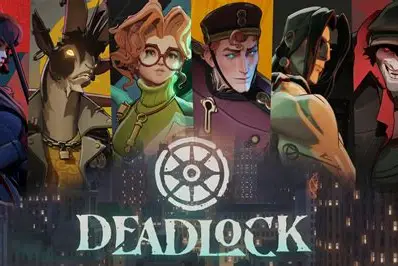

Hi, my name is Jared Daniel Reyes. I am 17 years old, my favorite color is purple, and I'm the oldest brother of two (aged 11 and 13). A fun fact about me is that I graduated highschool a year early and I changed the high school I was in three times! I really enjoy playing video games and aspire to be a game developer one day! While I am fairly new to coding as a whole, I will do my best to overcome the obstacles to achieve that dream of mine!
As one could assume, one of my dreams is to become a video game developer. The reason for this is because as a kid (to even now) I was always playing video games and it always made me wonder how they were made. Eventually, as I kept playing video games my mind was being flooded with ideas. For example, I always loved to play roguelike games that had a class feature so I thought of creating a similar game to World of Warcraft! Additionally, I had written sketches of ideas and made "card games" which were really made out of paper.
Another goal of mine is to travel around the world! When I was younger I always wanted to visit the philippines since my family is from there. I first visited the philippines three years ago but after visiting the philippines, I wanted to go see more of the world! A place I really want to travel to is Europe.
There are a couple hobbies that I have;
As an aspiring game developer, I do play video games! I've been playing video games since forever but I think the first time I ever played on a computer would have been when I was 8 years old. A video game I've been playing a lot recently is this game called deadlock. My favorite character in this game is called pocket.
Deadlock is a game created by the company Valve, they describes it as a third-person shooter multiplayer online battle arena (MOBA). In short, its a 6v6 shooter game with a diverse set of characters with special abilities to play with.

Another one of my hobbies that I like doing is reading books! However I'm not always so consistent with it, sometimes I'll forget to read or it'll take me a while to finish one. The types of books that I like to read are called mangas! My top three mangas are;
The last hobby I would like to share is that I love to work out. I want to take care of myself and so I go to the gym and work out. On top of that, I'm trying to build muscle so it could help me when I go to the climbing gym and boulder. Hopefully it helps me reach higher levels!
Thank you for reading my webpage and I appreciate you taking the time out of your day to do that, I hope you enjoyed learning about me!